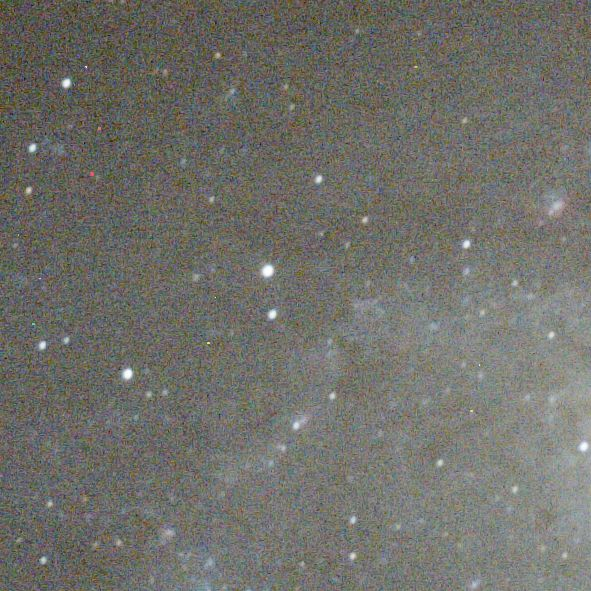
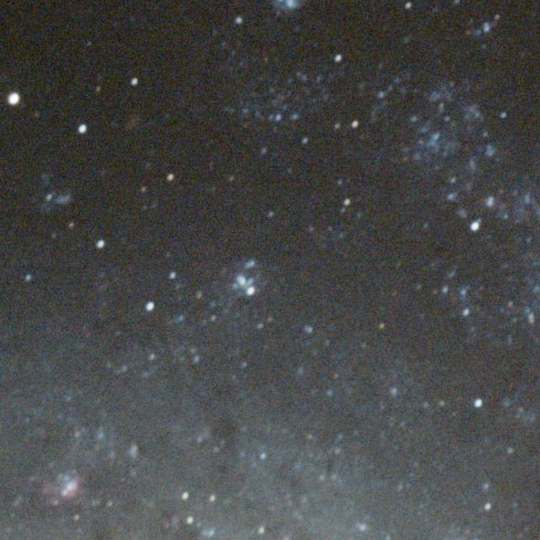
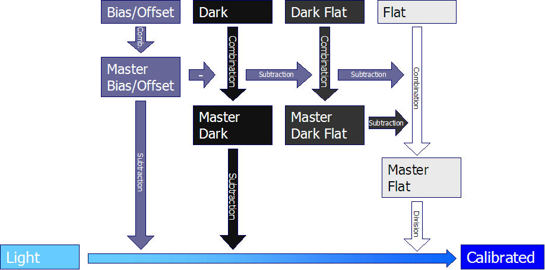
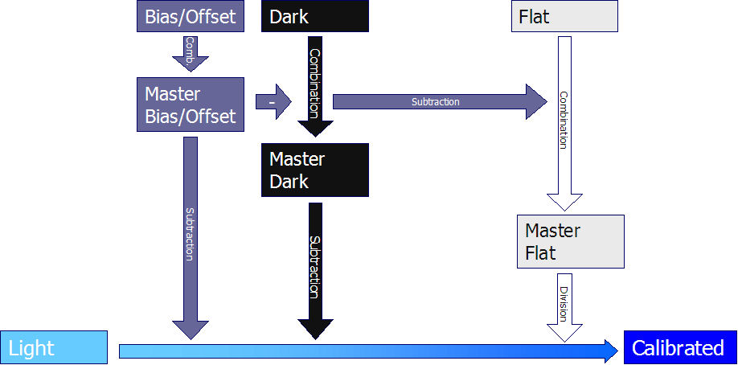
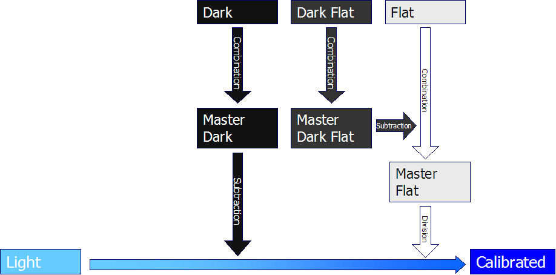

理論
または、より良い画像を作成する方法
なぜ合成するのか？
フレームはいくつ必要か？
キャリブレーション：ダーク、フラット、バイアスフレームの使い方
どのISO感度を選ぶべきか？
キャリブレーションプロセス
なぜ合成するのか？
答えは単純です：信号対雑音比（SNR）を向上させるためだけです。
合成された画像は、より明るくなりますか？いいえ。
合成された画像は、より色鮮やかになりますか？いいえ。
多くの画像を1つに合成する目的は、SNRを向上させることだけです。合成された画像が明るくなったり、色鮮やかになったりするわけではありませんが、ノイズが大幅に減少するため、ヒストグラムを大幅に引き伸ばすことができ、色やディテールを復元するための自由度が高まります。
|
右側の例は、1、2、4、16、および32枚の画像をスタックした結果を示しています。 スタックされるライトフレームの枚数が増加しても、画像が明るくなったり色鮮やかになったりするわけではありませんが、はるかに滑らかになっていることがわかります。
|
 ライトフレーム1枚 |
フレームはいくつ必要か？
多ければ多いほど良いですが、あるしきい値を超えると効率が低下します。
各フレームの露光時間に関係なく、信号対雑音比（SNR）は合成フレーム数の平方根に比例して増加します。
このルールは、エントロピー加重平均を除くすべての合成手法（平均、メディアン、カッパ-シグマクリッピング、自動適応型加重平均など）に当てはまります。エントロピー加重平均はエントロピーを使用して各ピクセルの重みを付けるため、エントロピーの寄与が大きいノイズが増加してしまいます。.
これは、ベースのSNRが1である場合、10枚の画像を合成するとSNRが3.16（10の平方根）増加することを意味します。30枚では5.47、50枚では7.07、100枚では10、300枚では17.32になります。
ご覧のように、比率を7倍向上させるには1〜50枚の間で50フレームが必要ですが、100枚以降ではさらに200枚が必要になります。
1分×100枚と10分×10枚は同じ結果になるか？
はい、SNRを考慮した場合は同じですが、最終的な結果を考慮した場合は確実に異なります。
10分間の露光と1分間の露光の違いは、10分間露光のSNRが1分間露光の3.16倍高いという点です。
したがって、10分のライトフレームを10枚合成しても、1分のライトフレームを100枚合成しても同じSNRが得られます。ただし、シグナル（興味深い部分）は同じにはならないでしょう。簡単に言えば、シグナルがノイズと見なされないように、ほとんどのライトフレームで光子を捉えるのに十分な露光時間が必要です。
例えば、非常に微かな星雲の場合、10分ごとに数個の光子が得られるとします。10分の露光時間を使用した場合、各ライトフレームで光子が捕捉されており、合成すると信号が強くなります。
一方、1分の露光時間を使用した場合、一部のライトフレームでしか光子を捕捉できず、ほとんどのライトフレームに存在しないため、合成時にその光子はノイズとみなされてしまいます。
2つ（またはそれ以上）の結果画像を合成できるか？
もちろん可能です。平方根の法則が適用されますが、少し条件が異なります。
2つの画像を合成すると、SNRは1.414（2の平方根）増加します。
もし両方の画像が同じSNRを持っている場合、これは単一のスタックを行うのと同じことです。これは、合成によって同じ画像が得られるという意味ではなく、単にSNRが同じになるということです。
ただし、一方のスタックが他方よりも多くのライトフレームを含んでいる場合、2つのスタックのSNRは異なり、合成結果のSNRはすべてのライトフレームを含む単一スタックのSNRよりも低くなります。
したがって、1分×10枚のスタックの結果を1分フレーム1枚と合成すると、SNRは2つのライトフレームを合成した場合とほぼ同じになります。これは、2つの画像を合成する際にノイズが加算され、プロセスにおいて品質の高い画像が品質の低い画像によって損なわれるためです。
キャリブレーション：
ダーク、フラット、バイアスフレームの使い方
キャリブレーションは、バイアスとダークの信号を減算し、フラット信号で除算するプロセスです。
ここでの目的は、ダーク、バイアス、フラットフレームの撮影方法を説明することではなく（こちらを参照）、可能な限り最高の画像を得るためにそれらをどのように使用するかを理解することです。
良いアイデア
素晴らしい画像を作成するためには、ダーク、バイアス、フラットフレームを使用しなければならないと誰もが言いますが、間違った方法で行うと、せっかくのライトフレームを簡単に損ない、非常に残念な結果に終わることがあります。
良いニュースは、素晴らしい結果を出すのは本当に簡単だということです。その理由と方法は以下の通りです。
一般的な誤解
ダーク、バイアス、フラットフレームの数がライトフレームの数に関連していると考えるのは一般的な誤解です。
多くの人が、同じライトフレームのセットに対して多数のダーク、バイアス、フラットフレームを使用すればはるかに良い結果が得られるにもかかわらず、ごく少数（時には1つだけ）のダーク、バイアス、フラットフレームしか使用していません。
平方根の法則に従えば、作成するために多数のフレームを使用するほど、マスターフレームははるかにクリーンになります。削除しようとしているのはダークとバイアスの信号であり、それに伴うノイズではないということを覚えておいてください。
たとえば、各ライトフレームからマスターダークを減算すると、マスターダークのノイズがライトフレームのノイズに追加されます。マスターダークのノイズが小さければ小さいほど、ライトフレームに追加されるノイズは少なくなります。これはマスターバイアスやマスターフラットにも当てはまります。
実際、マスターの作成に使用するフレーム数を極めて少なくすると、キャリブレーション済みのライトフレーム（バイアスとダークを減算し、フラットで除算したもの）のノイズが、キャリブレーション前のライトフレームのノイズと比較して、簡単に3倍になってしまう可能性があります。
その場合、ノイズをノイズのないマスターを使用した場合と同じレベルに戻すには、9倍（3の2乗）のライトフレームが必要になります。
|
右の例は、以下のスタック結果を示しています（画像を見るにはテキストにマウスを合わせます） |
 ライトフレーム32枚（キャリブレーションなし） |
これが、できるだけ多くのダーク、バイアス、フラットフレームを使用すべき理由です。実用的な観点から言えば、ノイズを追加しすぎないようにするには20枚が最小限であり、50〜100枚を使用すると、非常に美しく、ノイズのない（に近い）マスターフレームが得られます。
ホットピクセルに関する補足事項
ホットピクセルとは、正常に動作していないピクセルのことです。それらは、各ダークフレームおよび各ライトフレームで非常に強い信号として可視化されます。
もちろん、1つのダークフレームを1つのライトフレームから減算すると、ホットピクセルが除去され、ダーク減算がうまく機能したという誤った印象を与える可能性があります。
しかし同時に、この減算はキャリブレーションされたライトフレームのノイズを倍増させ、完全に台無しにしてしまいます。
どのISO感度を選ぶべきか？
この質問はよくあることですが、答えは単純で「関係ない...ある程度は」です。
実際、ISO感度は単なるDSLRの設定ですが、CMOSまたはCCDチップは同じ（ISO感度を変更してもチップ自体は変更しませんよね？）であるため、結果は本当に同じになります。
ISO感度を高くしたからといってより多くの光子が得られるわけではなく、単に信号が（ノイズも含めて）より増幅されるだけです。
良いニュースは、より暗い対象を捉えようとしてISO感度を変える必要はないということです。単により長い露光時間で撮影すればよいのです。
もちろん、各DSLRには最適なISO感度が存在するため、話はもう少し複雑です。
ただし、これは各センサーチップの特性（読み出しノイズと電子ノイズ）に依存し、計算するのは容易ではありません。
Christian Builは、一部のCanon DSLRの値を次のように計算しています。
| DSLR | 推奨（最適）ISO感度 |
| Canon EOS 10D | 400 (290) |
| Canon EOS 20D | 1000 (1000) |
| Canon EOS 350D | 800 (900) |
| Canon EOS 5D | 1000 (1100) |
キャリブレーションプロセス
キャリブレーションのプロセスや、各セットのファイル（ライト、ダーク、フラットなど）がどのように使用されるかは謎のように思われがちですが、実際には非常にシンプルです。
すべてのファイルが揃っている場合の完全なキャリブレーションプロセスは以下のとおりです：
完全なキャリブレーションプロセス（全ファイル利用可能） 
しかし、ダークフラットフレームを使用せずに適切にキャリブレーションを行うことは一般的であり、完全に可能です。その場合のキャリブレーションプロセスは以下のとおりです：
代替キャリブレーションプロセスI（ダークフラットフレームなし） 
一方、ダークフラットフレームを使用する場合、バイアスフレームを使用しなくても完全にキャリブレーションを行うことができます。その場合のプロセスは以下のとおりです：
代替キャリブレーションプロセスII（バイアスフレームなし） 
これら以外の組み合わせでは不適切なキャリブレーションとなるため、この3つの方法のいずれかに従う必要があります。